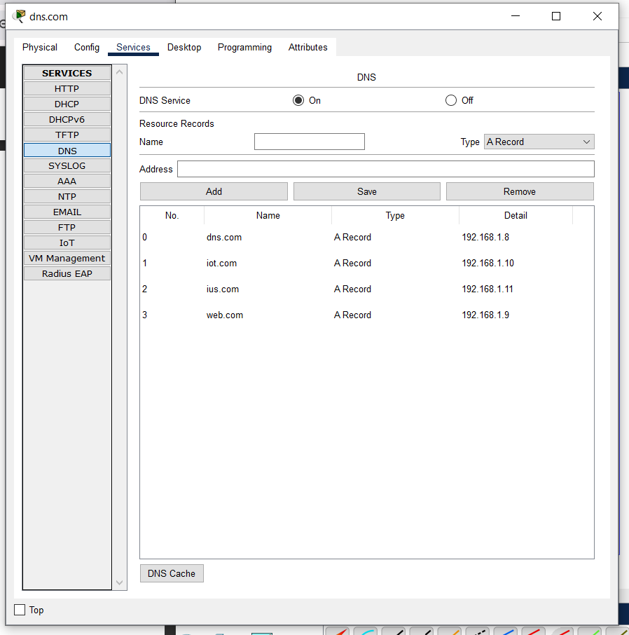
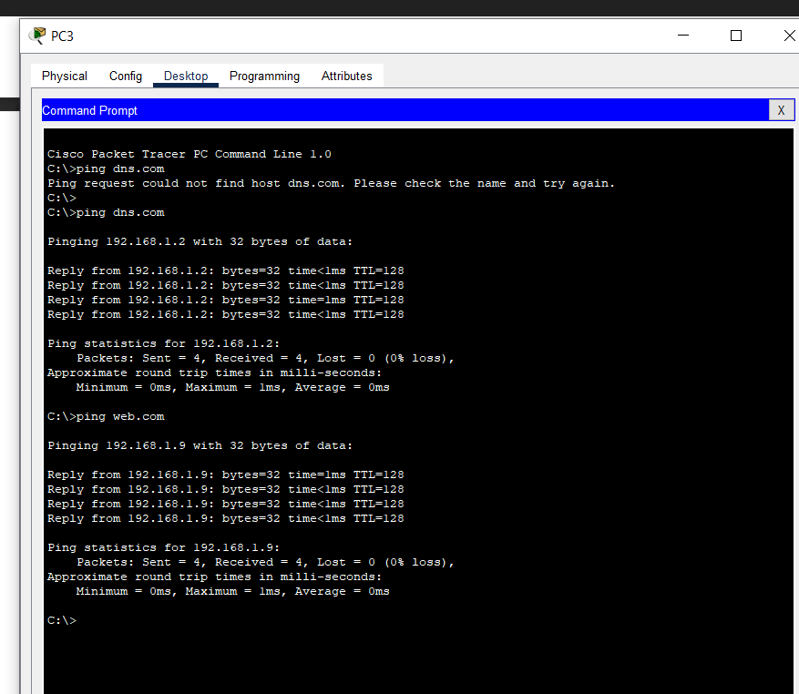

 
Parmis les competences que j’ai pu avoir et les remarques, en terme de conclusion, je peux dire configurant le NAT dans une topologie réseau, on garantit un accès sécurisé et efficace aux ressources Internet tout en optimisant l’utilisation des adresses IP publiques, ce qui renforce la gestion et la connectivité globales. En parallèle, la mise en place d’une topologie IoT permet une communication fluide entre les objets connectés, essentielle pour l’automatisation des processus et l’analyse des données en temps réel. Ces deux configurations, bien qu’orientées vers des objectifs différents, illustrent l’importance d’adopter une architecture réseau adaptée, combinant performance, sécurité et flexibilité pour répondre aux besoins variés des utilisateurs tout en assurant une évolutivité à long terme.